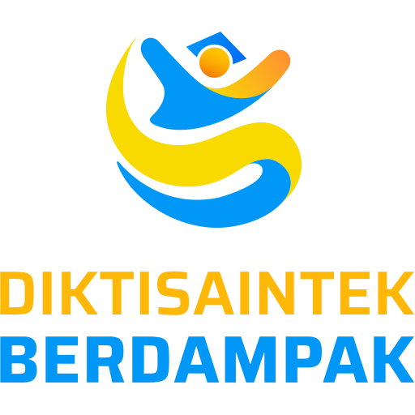
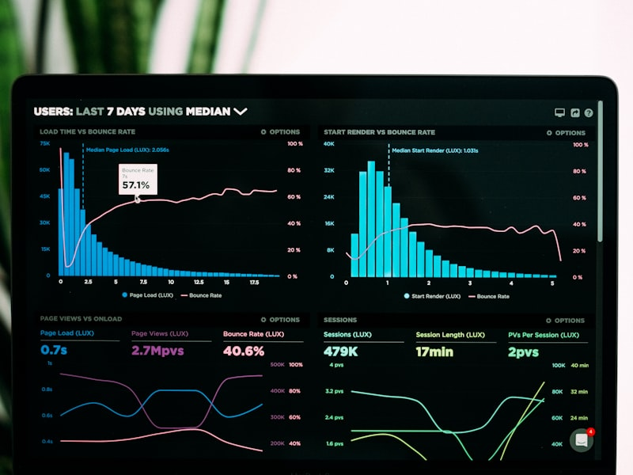
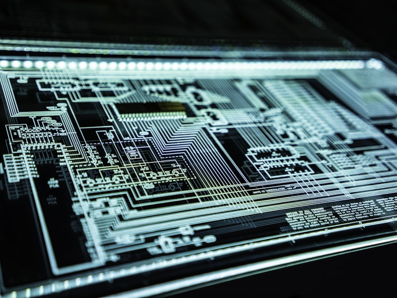

Data & Informasi di Era Digital
Memahami perbedaan data, informasi, dan pengetahuan — serta mengamankan diri di dunia digital yang saling terhubung
Agenda Pertemuan
Data, Informasi & Pengetahuan
Definisi, perbedaan, dan hierarki DIKW
Format & Ukuran Data Digital
Teks, gambar, audio, video beserta satuan penyimpanan
Big Data & Analytics
Volume, Velocity, Variety — mengapa data besar penting
Keamanan Siber
Malware, phishing, social engineering, 2FA, dan backup
Post-Test & Rangkuman
Uji pemahaman dan poin-poin penting
Data → Informasi → Pengetahuan
Data
Fakta mentah & angka
Informasi
Data + konteks = makna
Pengetahuan
Informasi + pengalaman = keputusan
Format & Ukuran Data Digital
| Jenis | Format Umum | Contoh Ukuran | Satuan |
|---|---|---|---|
| Teks | .txt, .pdf, .docx | 1 halaman ≈ 2 KB | Byte (B) |
| Gambar | .jpg, .png, .webp | 1 foto HP ≈ 3–5 MB | Megabyte (MB) |
| Audio | .mp3, .wav, .flac | 1 lagu MP3 ≈ 4 MB | Megabyte (MB) |
| Video | .mp4, .mkv, .webm | 1 film HD ≈ 4 GB | Gigabyte (GB) |
Big Data & Analytics
Big Data adalah kumpulan data yang terlalu besar untuk diolah oleh aplikasi database tradisional. Karakteristik utamanya dikenal sebagai 3V:

mengambil keputusan berbasis bukti
Mengapa Keamanan Siber Penting?
Kerugian Finansial
Serangan siber global merugikan $8 triliun pada 2023 — setara dengan PDB ketiga terbesar dunia.
Privasi & Data Pribadi
Kebocoran data pribadi dapat disalahgunakan untuk identitas palsu, penipuan, dan pemerasan.
Bisnis & Infrastruktur
Serangan ke rumah sakit, bank, atau PLN dapat mengancam nyawa dan melumpuhkan layanan publik.
Jenis-Jenis Malware
Virus
Menempel pada file, menyebar saat file dieksekusi. Dapat merusak data dan menggandakan diri.
Worm
Menyebar otomatis melalui jaringan tanpa perlu file inang atau interaksi pengguna.
Trojan
Menyamar sebagai software sah. Setelah diinstal, membuka backdoor untuk penyerang.
Ransomware
Mengenkripsi file korban dan meminta tebusan (biasanya dalam Bitcoin) untuk mendekripsinya.
Spyware
Mengintai aktivitas pengguna secara diam-diam: keystroke, browsing, hingga kredensial login.
Phishing, Hoax & Cyberbullying
Phishing
Penipuan via email/chat yang menyamar sebagai pihak sah untuk mencuri kata sandi atau data kartu kredit.
Hoax & Disinformasi
Berita palsu yang sengaja disebarluaskan untuk menyesatkan, memicu kepanikan, atau keuntungan politik.
Cyberbullying
Perundungan digital melalui media sosial, chat, atau game. Dampaknya serius terhadap kesehatan mental korban.
Social Engineering
Social engineering adalah teknik manipulasi psikologis yang mengeksploitasi kepercayaan, ketakutan, atau kelalaian manusia — bukan kelemahan teknis.
Pretexting
Penyerang membuat skenario palsu (misalnya: "dari bank") untuk mendapatkan informasi rahasia.
Baiting
Menarik korban dengan "umpan" — USB gratis berisi malware, atau link download film bajakan.
Tailgating
Menyusup masuk gedung di belakang karyawan sah yang baru membuka pintu (serangan fisik).

yang paling lemah"
— Kevin Mitnick
Selalu verifikasi identitas sebelum memberikan informasi sensitif — baik melalui telepon, email, atau langsung.
Two-Factor Authentication (2FA)
🔑 Something You Know
Password, PIN, atau pertanyaan keamanan
📱 Something You Have
HP (SMS/Authenticator App), token hardware, atau kartu
🛡️ 2FA Aktif
Dua faktor = jauh lebih aman. Password bocor pun akun tetap terlindungi.
Aturan Backup 3-2-1
3 Salinan
Simpan minimal 3 salinan data Anda (1 utama + 2 cadangan)
2 Media Berbeda
Gunakan 2 jenis media penyimpanan berbeda (misalnya HDD + cloud)
1 Offsite
Simpan 1 salinan di luar lokasi utama (cloud storage atau server remote)
External HDD/SSD
Backup lokal yang cepat. Cocok untuk file besar. Simpan di tempat aman.
Cloud Storage
Google Drive, OneDrive, Dropbox — otomatis, akses dari mana saja, terenkripsi.
Jadwal Rutin
Atur backup otomatis harian/mingguan. Test restore sesekali untuk memastikan backup berfungsi.
Post-Test: Uji Pemahaman
Poin-Poin Penting Pertemuan 5
Terima Kasih
Data adalah aset paling berharga di era digital — pahami, kelola, dan lindungi dengan bijak.
Pertemuan 6: Jaringan Komputer — Protokol, Topologi & Model OSI